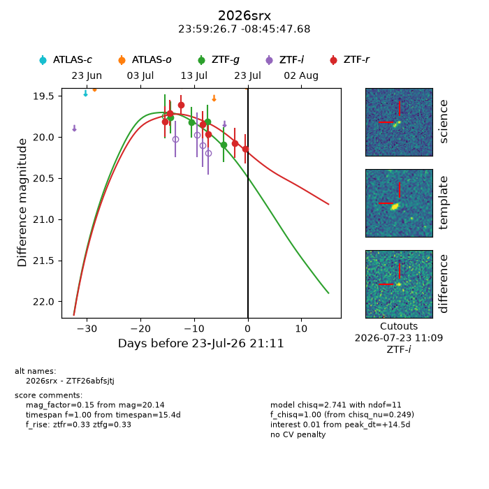
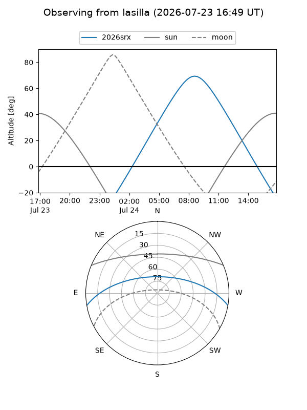
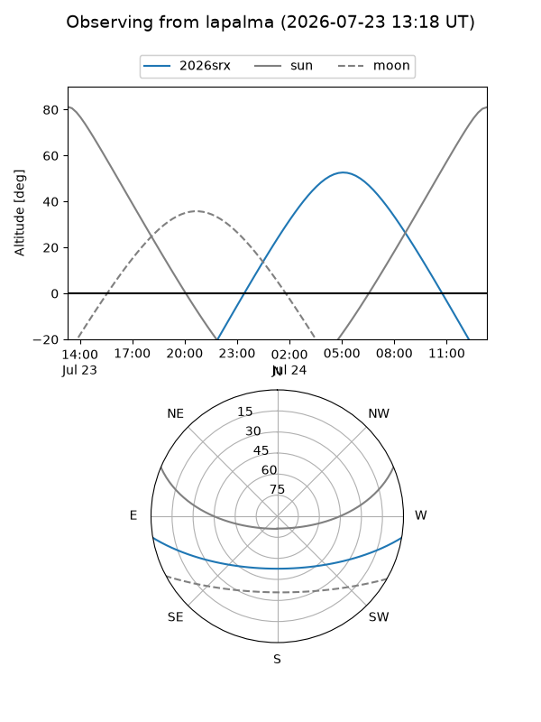
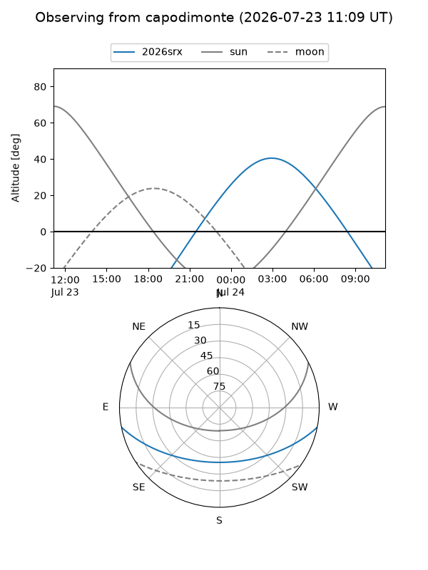
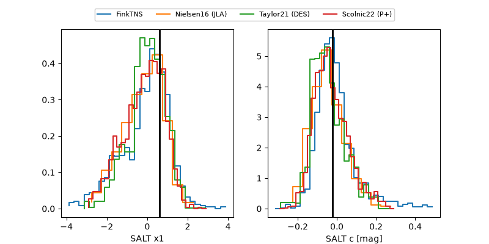

2026srx
Target 2026srx at 2026-07-23 21:14
Aliases and brokers:
FINK-ZTF: ztf.fink-portal.org/ZTF26abfsjtj
Lasair-ZTF: lasair-ztf.lsst.ac.uk/objects/ZTF26abfsjtj
ALeRCE-ZTF: alerce.online/object/ZTF26abfsjtj
YSE-PZ: ziggy.ucolick.org/yse/transient_detail/2026srx
TNS name: wis-tns.org/object/2026srx
Direct TNS query: direct search
alt names
ZTF26abfsjtj (ztf,fink_ztf)
2026srx (tns,yse)
Coordinates:
equatorial (ra, dec) = 359.8611,-8.76324
equatorial (HMS+DMS) = 23:59:26.66,-08:45:47.68
galactic (l, b) = (86.7130,-67.90021)
Flags:
TNS type: nan
peak dt: +14.5
Photometry:
last ztfg=20.09, ztfr=20.14
4 ztfg, 7 ztfr detections
Lightcurve

Visibility



Additional plots
